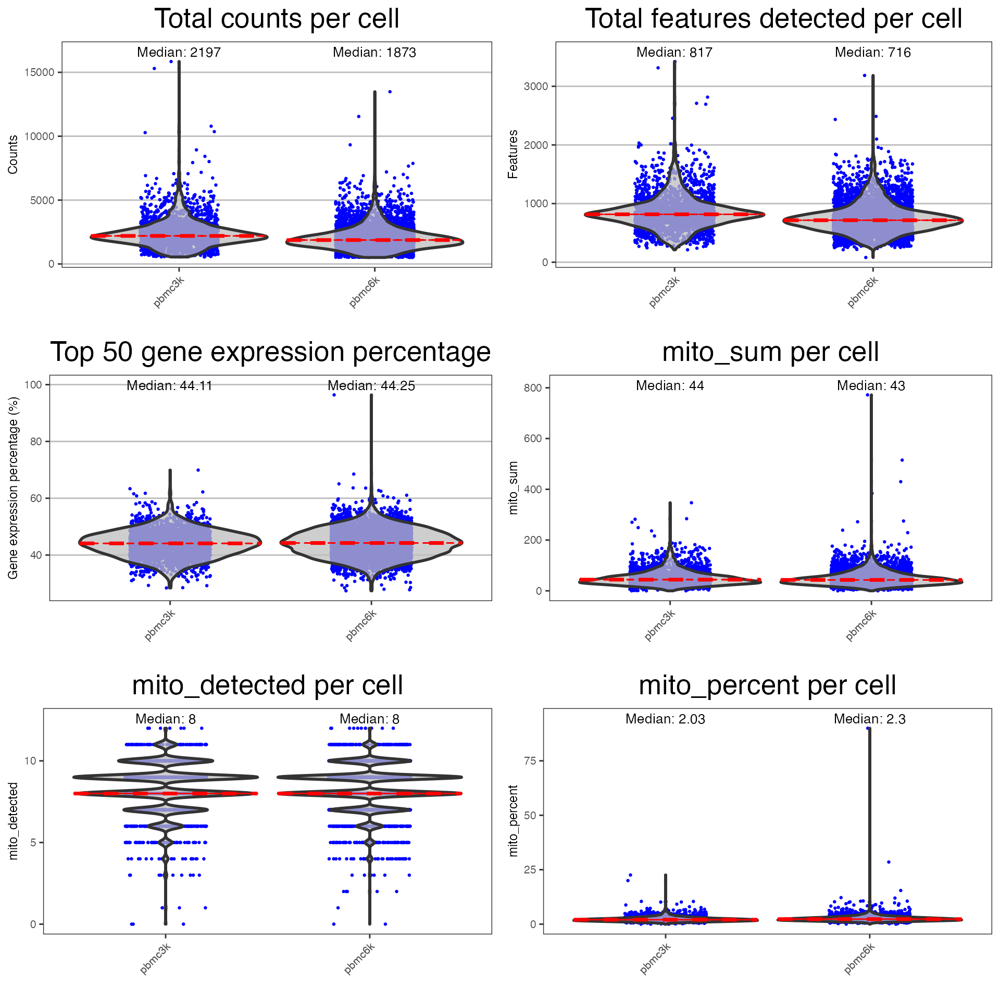
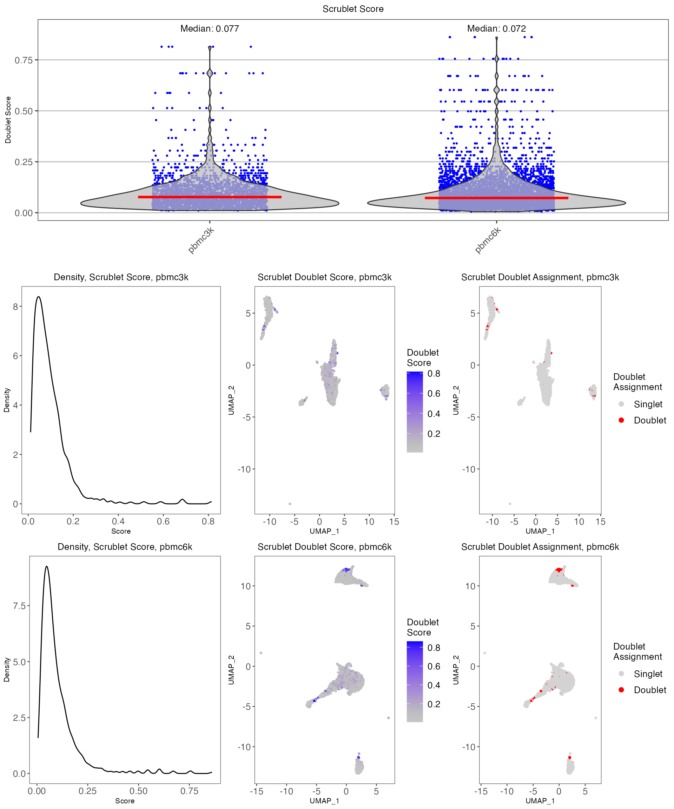
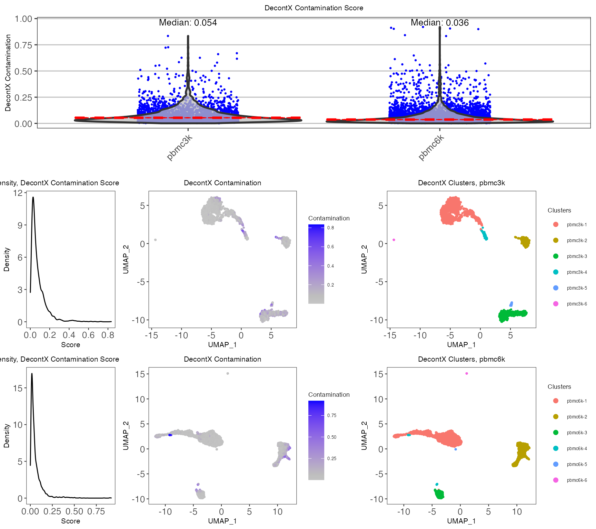
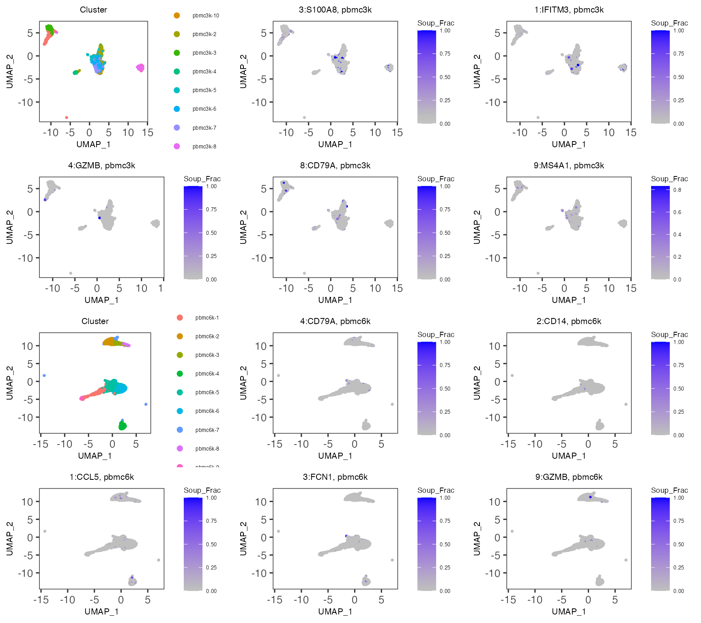

Performing comprehensive quality control (QC) is necessary to remove poor quality cells for downstream analysis of single-cell RNA sequencing (scRNA-seq) data. Therefore, assessment of the data is required, for which various QC algorithms have been developed. In singleCellTK (SCTK), we have written convenience functions for several of these tools. In this guide, we will demonstrate how to use these functions to perform quality control on cell data. (For definition of cell data, please refer this documentation.)
The package can be loaded using the library command.
We will use a filtered form of the PBMC 3K and 6K dataset from the package TENxPBMCData, which is available from the importExampleData() function. We will combine these datasets together into a single SingleCellExperiment object.
pbmc3k <- importExampleData(dataset = "pbmc3k")
pbmc6k <- importExampleData(dataset = "pbmc6k")
pbmc.combined <- BiocGenerics::cbind(pbmc3k, pbmc6k)
sample.vector = colData(pbmc.combined)$sampleSCTK also supports the importing of single-cell data from the following platforms: 10X CellRanger, STARSolo, BUSTools, SEQC, DropEST, Alevin, as well as dataset already stored in SingleCellExperiment object and AnnData object. To load your own input data, please refer Function Reference for pre-processing tools under Console Analysis section in Import data into SCTK for detailed instruction.
SCTK utilizes 2D embedding techniques such as TSNE and UMAP for visualizing single-cell data. Users can modify the dimensions by adjusting the parameters within the function. The logNorm parameter should be set to TRUE for normalization prior to generating the 2D embedding.
The sample parameter may be specified if multiple samples exist in the SingleCellExperiment object. Here, we will use the sample vector stored in the colData slot of the SingleCellExperiment object.
# UMAP:
pbmc.combined <- getUMAP(inSCE = pbmc.combined, useAssay = "counts", logNorm = TRUE, sample = sample.vector)
# TSNE (not run):
# pbmc <- getTSNE(inSCE=pbmc, useAssay="counts", logNorm = TRUE, sample = colData(pbmc)$sample)All of the droplet-based QC algorithms are able to be run under the wrapper function runCellQC(). By default all possible QC algorithms will be run.
Users may set a sample parameter if need to compare between multiple samples. Here, we will use the sample vector stored in the SingleCellExperiment object.
If users wishes, a list of gene sets can be applied to the function to determine the expression of a set of specific genes. A gene list imported into the SingleCellExperiment object using importGeneSets* functions can be set as collectionName. Additionally, a pre-made list of genes can be used to determine the level of gene expression per cell. A list containing gene identifiers may be set as geneSetList, or the user may instead use the geneSetCollection parameter to supply a GeneSetCollection object from the GSEABase package. Please also refer to Import Genesets documentation.
pbmc.combined <- importGeneSetsFromGMT(inSCE = pbmc.combined, collectionName = "mito", file = system.file("extdata/mito_subset.gmt", package = "singleCellTK"))
set.seed(12345)
pbmc.combined <- runCellQC(pbmc.combined,
algorithms = c("QCMetrics", "scrublet", "scDblFinder", "cxds", "bcds", "cxds_bcds_hybrid", "doubletFinder", "decontX", "soupX"),
sample = sample.vector,
collectionName = "mito")Users can also specify mitoRef, mitoIDType and mitoGeneLocation arguments in runCellQC function to quantify mitochondrial gene expression without the need to import gene sets. For the details about these arguments, please refer to runCellQC and runPerCellQC() .
pbmc.combined <- runCellQC(pbmc.combined,
algorithms = c("QCMetrics", "scrublet", "scDblFinder", "cxds", "bcds", "cxds_bcds_hybrid", "doubletFinder", "decontX", "soupX"),
sample = sample.vector,
mitoRef = "human", mitoIDType = "symbol", mitoGeneLocation = "rownames")## [11:44:07] WARNING: amalgamation/../src/learner.cc:1115: Starting in XGBoost 1.3.0, the default evaluation metric used with the objective 'binary:logistic' was changed from 'error' to 'logloss'. Explicitly set eval_metric if you'd like to restore the old behavior.
## [11:44:39] WARNING: amalgamation/../src/learner.cc:1115: Starting in XGBoost 1.3.0, the default evaluation metric used with the objective 'binary:logistic' was changed from 'error' to 'logloss'. Explicitly set eval_metric if you'd like to restore the old behavior.
## [11:44:56] WARNING: amalgamation/../src/learner.cc:1115: Starting in XGBoost 1.3.0, the default evaluation metric used with the objective 'binary:logistic' was changed from 'error' to 'logloss'. Explicitly set eval_metric if you'd like to restore the old behavior.
## [11:45:26] WARNING: amalgamation/../src/learner.cc:1115: Starting in XGBoost 1.3.0, the default evaluation metric used with the objective 'binary:logistic' was changed from 'error' to 'logloss'. Explicitly set eval_metric if you'd like to restore the old behavior.
If users choose to only run a specific set of algorithms, they can specify which to run with the algorithms parameter. By default, the runCellQC() will run "QCMetrics", "scDblFinder", "cxds", "bcds", "cxds_bcds_hybrid", "decontX" and "soupX" algorithms by default. Besides, "scrublet" and "doubletFinder" are supported if our users want to run them.
After running QC functions with SCTK, the output will be stored in the colData slot of the SingleCellExperiment object.
| Sample | Barcode | Sequence | Library | Cell_ranger_version | Tissue_status | Barcode_type | Chemistry | Sequence_platform | Individual | Date_published | sample | sum | detected | percent.top_50 | percent.top_100 | percent.top_200 | percent.top_500 | mito_sum | mito_detected | mito_percent | total | scrublet_score | scrublet_call | scDblFinder_sample | scDblFinder_doublet_call | scDblFinder_doublet_score | scDblFinder_weighted | scDblFinder_cxds_score | doubletFinder_doublet_score_resolution_1.5 | doubletFinder_doublet_label_resolution_1.5 | scds_cxds_score | scds_cxds_call | scds_bcds_score | scds_bcds_call | scds_hybrid_score | scds_hybrid_call | decontX_contamination | decontX_clusters | soupX_nUMIs | soupX_clusters | soupX_contamination | |
|---|---|---|---|---|---|---|---|---|---|---|---|---|---|---|---|---|---|---|---|---|---|---|---|---|---|---|---|---|---|---|---|---|---|---|---|---|---|---|---|---|---|---|
| pbmc3k_AAACATACAACCAC-1 | pbmc3k | AAACATACAACCAC-1 | AAACATACAACCAC | 1 | v1.1.0 | NA | GemCode | Chromium_v1 | NextSeq500 | HealthyDonor2 | 2016-05-26 | pbmc3k | 2421 | 781 | 47.74886 | 63.27964 | 74.96902 | 88.39323 | 73 | 10 | 3.015283 | 2421 | 0.1606218 | Singlet | pbmc3k | Singlet | 0.2706641 | 0.7151944 | 0.0377920 | 0.0138889 | Singlet | 22794.14 | Singlet | 0.0149839 | Singlet | 0.2109824 | Singlet | 0.0320272 | pbmc3k-1 | 2421 | pbmc3k-6 | 0.059 |
| pbmc3k_AAACATTGAGCTAC-1 | pbmc3k | AAACATTGAGCTAC-1 | AAACATTGAGCTAC | 1 | v1.1.0 | NA | GemCode | Chromium_v1 | NextSeq500 | HealthyDonor2 | 2016-05-26 | pbmc3k | 4903 | 1352 | 45.50275 | 61.02386 | 71.81318 | 82.62288 | 186 | 10 | 3.793596 | 4903 | 0.1147541 | Singlet | pbmc3k | Singlet | 0.1667544 | 0.5509301 | 0.1550617 | 0.1527778 | Singlet | 35689.05 | Singlet | 0.9710556 | Doublet | 0.8471188 | Singlet | 0.1196156 | pbmc3k-2 | 4903 | pbmc3k-9 | 0.059 |
| QC output | Description | Methods | Package/Tool |
|---|---|---|---|
sum |
Total counts | runPerCellQC() |
scater |
detected |
Total features | runPerCellQC() |
scater |
percent_top |
% Expression coming from top features | runPerCellQC() |
scater |
subsets_* |
sum, detected, percent_top calculated on specified gene list | runPerCellQC() |
scater |
scrublet_score |
Doublet score | runScrublet() |
scrublet |
scrublet_call |
Doublet classification based on threshold | runScrublet() |
scrublet |
scDblFinder_doublet_score |
Doublet score | runScDblFinder() |
scDblFinder |
doubletFinder_doublet_score |
Doublet score | runDoubletFinder() |
DoubletFinder |
doubletFinder_doublet_label_resolution |
Doublet classification based on threshold | runDoubletFinder() |
DoubletFinder |
scds_cxds_score |
Doublet score | runCxds() |
SCDS |
scds_cxds_call |
Doublet classification based on threshold | runCxds() |
SCDS |
scds_bcds_score |
Doublet score | runBcds() |
SCDS |
scds_bcds_call |
Doublet classification based on threshold | runBcds() |
SCDS |
scds_hybrid_score |
Doublet score | runCxdsBcdsHybrid() |
SCDS |
scds_hybrid_call |
Doublet classification based on threshold | runCxdsBcdsHybrid() |
SCDS |
decontX_contamination |
Ambient RNA contamination | runDecontX() |
celda |
decontX_clusters |
Clusters determined in dataset based on underlying algorithm | runDecontX() |
celda |
soupX_nUMIs |
Total number of UMI per cell | runSoupX() |
SoupX |
soupX_clusters |
Quick clustering label if clustering not provided by users | runSoupX() |
scran |
soupX_contamination |
Ambient RNA contamination | runSoupX() |
SoupX |
The names of the 2D embedding and dimension reduction matrices are stored in the reducedDims slot of the SingleCellExperiment object.
reducedDims(pbmc.combined)## List of length 8
## names(8): UMAP scrublet_TSNE ... SoupX_UMAP_pbmc3k SoupX_UMAP_pbmc6kThe function sampleSummaryStats() may be used to generate a table containing the mean and median of the data per sample, which is stored within the qc_table table under metadata. The table can then be returned using getSampleSummaryStatsTable.
pbmc.combined <- sampleSummaryStats(pbmc.combined, sample = sample.vector)
getSampleSummaryStatsTable(pbmc.combined, statsName = "qc_table")## pbmc3k pbmc6k All Samples
## Number of Cells 2700.00 5419.00 8119.00
## Mean counts 2366.90 2027.60 2140.50
## Median counts 2197.00 1873.00 1988.00
## Mean features detected 846.99 748.06 780.96
## Median features detected 817.00 716.00 750.00If users choose to generate a table for all QC metrics generated through runCellQC(), they may set the simple parameter to FALSE.
pbmc.combined <- sampleSummaryStats(pbmc.combined, sample = sample.vector, simple = FALSE)
getSampleSummaryStatsTable(pbmc.combined, statsName = "qc_table")## pbmc3k pbmc6k
## Number of Cells 2700.0000 5419.0000
## Mean counts 2366.9000 2027.6000
## Median counts 2197.0000 1873.0000
## Mean features detected 846.9900 748.0600
## Median features detected 817.0000 716.0000
## Scrublet - Number of doublets 0.0000 0.0000
## Scrublet - Percentage of doublets 0.0000 0.0000
## scDblFinder - Number of doublets 104.0000 298.0000
## scDblFinder - Percentage of doublets 3.8500 5.5000
## DoubletFinder - Number of doublets, Resolution 1.5 202.0000 406.0000
## DoubletFinder - Percentage of doublets, Resolution 1.5 7.4800 7.4900
## CXDS - Number of doublets 132.0000 294.0000
## CXDS - Percentage of doublets 4.8900 5.4300
## BCDS - Number of doublets 151.0000 257.0000
## BCDS - Percentage of doublets 5.5900 4.7400
## SCDS Hybrid - Number of doublets 173.0000 301.0000
## SCDS Hybrid - Percentage of doublets 6.4100 5.5500
## DecontX - Mean contamination 0.0811 0.0603
## DecontX - Median contamination 0.0535 0.0364
## All Samples
## Number of Cells 8119.0000
## Mean counts 2140.5000
## Median counts 1988.0000
## Mean features detected 780.9600
## Median features detected 750.0000
## Scrublet - Number of doublets 0.0000
## Scrublet - Percentage of doublets 0.0000
## scDblFinder - Number of doublets 402.0000
## scDblFinder - Percentage of doublets 4.9500
## DoubletFinder - Number of doublets, Resolution 1.5 608.0000
## DoubletFinder - Percentage of doublets, Resolution 1.5 7.4900
## CXDS - Number of doublets 426.0000
## CXDS - Percentage of doublets 5.2500
## BCDS - Number of doublets 408.0000
## BCDS - Percentage of doublets 5.0300
## SCDS Hybrid - Number of doublets 474.0000
## SCDS Hybrid - Percentage of doublets 5.8400
## DecontX - Mean contamination 0.0673
## DecontX - Median contamination 0.0412Instead of running all quality control methods on the dataset at once, users may elect to execute QC methods individually. The parameters as well as the outputs to individual QC functions are described in detail as follows:
SingleCellTK utilizes the scater package to compute cell-level QC metrics. The wrapper function runPerCellQC() can be used to separately compute general QC metrics on its own.
inSCE parameter is the input SingleCellExperiment object.useAssay is the assay object that in the SingleCellExperiment object the user wishes to use.A list of gene sets can be applied to the function to determine the expression of a set of specific genes, as mentioned before. Please also refer to Import Genesets documentation.
The QC outputs are sum, detected, and percent_top_X, stored as variables in colData.
sum contains the total number of counts for each cell.detected contains the total number of features for each cell.percent_top_X contains the percentage of the total counts that is made up by the expression of the top X genes for each cell.subsets_ columns contain information for the specific gene list that was used. For instance, if a gene list containing ribosome genes named "ribosome" was used, subsets_ribosome_sum would contain the total number of ribosome gene counts for each cell.mito_sum, mito_detected and mito_percent contains number of counts, number of mito features and percentage of mito gene expression of each cells. These columns will show up only if you specify arguments related to mito genes quantification in runCellQC function. Please refer to runCellQC and runPerCellQC documentation for more details.
pbmc.combined <- runPerCellQC(
inSCE = pbmc.combined,
useAssay = "counts",
collectionName = "ribosome",
mitoRef = "human", mitoIDType = "symbol", mitoGeneLocation = "rownames")Doublets hinder cell-type identification by appearing as a distinct transcriptomic state, and need to be removed for downstream analysis. SCTK contains various doublet detection tools that the user may choose from.
Scrublet aims to detect doublets by creating simulated doublets from combining transcriptomic profiles of existing cells in the dataset. The wrapper function runScrublet() can be used to separately run the Scrublet algorithm on its own.
sample indicates what sample each cell originates from. It can be set to NULL if all cells in the dataset came from the same sample.Scrublet also has a large set of parameters that the user can adjust, please see the function reference for detail, by clicking on the function name.
The Scrublet outputs include the following colData variables:
scrublet_score, which is a numeric variable of the likelihood that a cell is a doubletscrublet_call, which is the assignment of whether the cell is a doublet.
pbmc.combined <- runScrublet(
inSCE = pbmc.combined,
sample = colData(pbmc.combined)$sample,
useAssay = "counts"
)ScDblFinder is a doublet detection algorithm. ScDblFinder aims to detect doublets by creating a simulated doublet from existing cells and projecting it to the same PCA space as the cells. The wrapper function runScDblFinder() can be used to separately run the ScDblFinder algorithm on its own.
nNeighbors is the number of nearest neighbor used to calculate the density for doublet detection.simDoublets is used to determine the number of simulated doublets used for doublet detection.The output of ScDblFinder is a scDblFinder_doublet_score, which will be stored as a colData variable. The doublet score of a droplet will be higher if the it is deemed likely to be a doublet.
pbmc.combined <- runScDblFinder(inSCE = pbmc.combined, sample = colData(pbmc.combined)$sample, useAssay = "counts")DoubletFinder is a doublet detection algorithm which depends on the single cell analysis package Seurat. The wrapper function runDoubletFinder() can be used to separately run the DoubletFinder algorithm on its own.
seuratRes - runDoubletFinder() relies on a parameter (in Seurat) called “resolution” to determine cells that may be doublets. Users will be able to manipulate the resolution parameter through seuratRes. If multiple numeric vectors are stored in seuratRes, there will be multiple label/scores.seuratNfeatures determines the number of features that is used in the FindVariableFeatures function in Seurat.seuratPcs determines the number of dimensions used in the FindNeighbors function in Seurat.formationRate is the estimated doublet detection rate in the dataset. It aims to detect doublets by creating simulated doublets from combining transcriptomic profiles of existing cells in the dataset.The DoubletFinder outputs include the following colData variable:
doubletFinder_doublet_score, which is a numeric variable of the likelihood that a cell is a doubletdoubletFinder_doublet_label, which is the assignment of whether the cell is a doublet.
pbmc.combined <- runDoubletFinder(
inSCE = pbmc.combined, useAssay = "counts",
sample = colData(pbmc.combined)$sample,
seuratRes = c(1.0), seuratPcs = 1:15,
seuratNfeatures = 2000,
formationRate = 0.075, seed = 12345
)CXDS, or co-expression based doublet scoring, is an algorithm in the SCDS package which employs a binomial model for the co-expression of pairs of genes to determine doublets. The wrapper function runCxds() can be used to separately run the CXDS algorithm on its own.
ntop is the number of top variance genes to consider.binThresh is the minimum counts a gene needs to have to be included in the analysis.verb determines whether progress messages will be displayed or not.retRes will determine whether the gene pair results should be returned or not.estNdbl is the user estimated number of doublets.The output of runCxds() is the doublet score, scds_cxds_score, which will be stored as a colData variable.
BCDS, or binary classification based doublet scoring, is an algorithm in the SCDS package which uses a binary classification approach to determine doublets. The wrapper function runBcds() can be used to separately run the BCDS algorithm on its own.
ntop is the number of top variance genes to consider.srat is the ratio between original number of cells and simulated doublets.nmax is the maximum number of cycles that the algorithm should run through. If set to "tune", this will be automatic.varImp determines if the variable importance should be returned or not.The output of runBcds() is scds_bcds_score, which is the likelihood that a cell is a doublet and will be stored as a colData variable.
The CXDS-BCDS hybrid algorithm, uses both CXDS and BCDS algorithms from the SCDS package. The wrapper function runCxdsBcdsHybrid() can be used to separately run the CXDS-BCDS hybrid algorithm on its own.
All parameters from the runCxds() and runBcds() functions may be applied to this function in the cxdsArgs and bcdsArgs parameters, respectively.
The output of runCxdsBcdsHybrid() is the doublet score, scds_hybrid_score, which will be stored as a colData variable.
pbmc.combined <- runCxdsBcdsHybrid(
inSCE = pbmc.combined, sample = colData(pbmc.combined)$sample,
seed = 12345, nTop = 500
)In droplet-based single cell technologies, ambient RNA that may have been released from apoptotic or damaged cells may get incorporated into another droplet, and can lead to contamination. decontX, available from celda, is a Bayesian method for the identification of the contamination level at a cellular level. The wrapper function runDecontX() can be used to separately run the DecontX algorithm on its own.
The outputs of runDecontX() are decontX_contamination and decontX_clusters.
decontX_contamination is a numeric vector which characterizes the level of contamination in each cell.runDecontX() algorithm. decontX_clusters is the resulting cluster assignment, which can also be labeled on the plot. For performing fine-tuned clustering in SCTK, please refer to Clustering documentation
pbmc.combined <- runDecontX(
inSCE = pbmc.combined, useAssay = "counts"
sample = colData(pbmc.combined)$sample
)In droplet-based single cell technologies, ambient RNA that may have been released from apoptotic or damaged cells may get incorporated into another droplet, and can lead to contamination. SoupX uses non-expressed genes to estimates a global contamination fraction. The wrapper function runSoupX() can be used to separately run the SoupX algorithm on its own.
he main outputs of runSoupX are soupX_contamination, soupX_clusters, and the corrected assay SoupX, together with other intermediate metrics that SoupX generates.
soupX_contamination is a numeric vector which characterizes the level of contamination in each cell. SoupX generates one global contamination estimate per sample, instead of returning cell-specific estimation.quickCluster() method from package scran is adopted for this purpose. soupX_clusters is the resulting cluster assignment, which can also be labeled on the plot. For performing fine-tuned clustering in SCTK, please refer to Clustering documentation
pbmc.combined <- runSoupX(
inSCE = pbmc.combined, useAssay = "counts"
sample = colData(pbmc.combined)$sample
)Upon running runCellQC() or any individual QC methods, the QC outputs will need to be plotted. For each QC method, SCTK provides a specialized plotting function.
The wrapper function plotRunPerCellQCResults() can be used to plot the general QC outputs.
runpercellqc.results <- plotRunPerCellQCResults(inSCE = pbmc.combined, sample = sample.vector, combinePlot = "all", axisSize = 8, axisLabelSize = 9, titleSize = 20, labelSamples=TRUE)
runpercellqc.results
The wrapper function plotScrubletResults() can be used to plot the results from the Scrublet algorithm. Here, we will use the UMAP coordinates generated from getUMAP() in previous sections.
reducedDims(pbmc.combined)## List of length 8
## names(8): UMAP scrublet_TSNE ... SoupX_UMAP_pbmc3k SoupX_UMAP_pbmc6k
scrublet.results <- plotScrubletResults(
inSCE = pbmc.combined,
reducedDimName = "UMAP",
sample = colData(pbmc.combined)$sample,
combinePlot = "all",
titleSize = 10,
axisLabelSize = 8,
axisSize = 10,
legendSize = 10,
legendTitleSize = 10
)
scrublet.results 
The wrapper function plotScDblFinderResults() can be used to plot the QC outputs from the ScDblFinder algorithm.
scDblFinder.results <- plotScDblFinderResults(
inSCE = pbmc.combined, sample = colData(pbmc.combined)$sample,
reducedDimName = "UMAP", combinePlot = "all",
titleSize = 13,
axisLabelSize = 13,
axisSize = 13,
legendSize = 13,
legendTitleSize = 13
)The wrapper function plotDoubletFinderResults() can be used to plot the QC outputs from the DoubletFinder algorithm.
doubletFinderResults <- plotDoubletFinderResults(
inSCE = pbmc.combined,
sample = colData(pbmc.combined)$sample,
reducedDimName = "UMAP",
combinePlot = "all",
titleSize = 13,
axisLabelSize = 13,
axisSize = 13,
legendSize = 13,
legendTitleSize = 13
)The wrapper function plotCxdsResults() can be used to plot the QC outputs from the CXDS algorithm.
cxdsResults <- plotCxdsResults(
inSCE = pbmc.combined,
sample = colData(pbmc.combined)$sample,
reducedDimName = "UMAP", combinePlot = "all",
titleSize = 13,
axisLabelSize = 13,
axisSize = 13,
legendSize = 13,
legendTitleSize = 13
)The wrapper function plotBcdsResults() can be used to plot the QC outputs from the BCDS algorithm
bcdsResults <- plotBcdsResults(
inSCE = pbmc.combined,
sample = colData(pbmc.combined)$sample,
reducedDimName = "UMAP", combinePlot = "all",
titleSize = 13,
axisLabelSize = 13,
axisSize = 13,
legendSize = 13,
legendTitleSize = 13
)The wrapper function plotScdsHybridResults() can be used to plot the QC outputs from the CXDS-BCDS hybrid algorithm.
bcdsCxdsHybridResults <- plotScdsHybridResults(
inSCE = pbmc.combined, sample = colData(pbmc.combined)$sample,
reducedDimName = "UMAP", combinePlot = "all",
titleSize = 13,
axisLabelSize = 13,
axisSize = 13,
legendSize = 13,
legendTitleSize = 13
)The wrapper function plotDecontXResults() can be used to plot the QC outputs from the DecontX algorithm.
decontxResults <- plotDecontXResults(
inSCE = pbmc.combined, sample = colData(pbmc.combined)$sample,
reducedDimName = "UMAP", combinePlot = "all",
titleSize = 8,
axisLabelSize = 8,
axisSize = 10,
legendSize = 5,
legendTitleSize = 7,
relWidths = c(0.5, 1, 1),
sampleRelWidths = c(0.5, 1, 1),
labelSamples = TRUE,
labelClusters = FALSE
)
decontxResults
The wrapper function plotSoupXResults() can be used to plot the QC outputs from the SoupX algorithm.
soupxResults <- plotSoupXResults(
inSCE = pbmc.combined, sample = colData(pbmc.combined)$sample,
reducedDimName = "UMAP", combinePlot = "all",
titleSize = 8,
axisLabelSize = 8,
axisSize = 10,
legendSize = 5,
legendTitleSize = 7,
labelClusters = FALSE
)
soupxResults
SingleCellExperiment objects can be subset by its colData using subsetSCECols(). The colData parameter takes in a character vector of expression(s) which will be used to identify a subset of cells using variables found in the colData of the SingleCellExperiment object. For example, if x is a numeric vector in colData, then setting colData = "x < 5" will return a SingleCellExperiment object where all columns (cells) meet the condition that x is less than 5. The index parameter takes in a numeric vector of indices which should be kept, while bool takes in a logical vector of TRUE or FALSE which should be of the same length as the number of columns (cells) in the SingleCellExperiment object. Please refer to our Filtering documentation for detail.
#Before filtering:
dim(pbmc.combined)## [1] 32738 8119Remove barcodes with high mitochondrial gene expression:
pbmc.combined <- subsetSCECols(pbmc.combined, colData = 'mito_percent < 20')Remove detected doublets from Scrublet:
pbmc.combined <- subsetSCECols(pbmc.combined, colData = 'scrublet_call == "Singlet"')Remove cells with high levels of ambient RNA contamination:
pbmc.combined <- subsetSCECols(pbmc.combined, colData = 'decontX_contamination < 0.5')
#After filtering:
dim(pbmc.combined)## [1] 32738 7931For performing QC on droplet-level raw count matrix with SCTK, please refer to our Droplet QC documentation.
## R version 4.1.2 (2021-11-01)
## Platform: x86_64-w64-mingw32/x64 (64-bit)
## Running under: Windows 10 x64 (build 19043)
##
## Matrix products: default
##
## locale:
## [1] LC_COLLATE=Chinese (Simplified)_China.936
## [2] LC_CTYPE=Chinese (Simplified)_China.936
## [3] LC_MONETARY=Chinese (Simplified)_China.936
## [4] LC_NUMERIC=C
## [5] LC_TIME=Chinese (Simplified)_China.936
##
## attached base packages:
## [1] stats4 stats graphics grDevices utils datasets methods
## [8] base
##
## other attached packages:
## [1] TENxPBMCData_1.12.0 HDF5Array_1.22.1
## [3] rhdf5_2.38.0 dplyr_1.0.7
## [5] singleCellTK_2.6.0 DelayedArray_0.20.0
## [7] Matrix_1.3-4 SingleCellExperiment_1.16.0
## [9] SummarizedExperiment_1.24.0 Biobase_2.54.0
## [11] GenomicRanges_1.46.1 GenomeInfoDb_1.30.0
## [13] IRanges_2.28.0 S4Vectors_0.32.3
## [15] BiocGenerics_0.40.0 MatrixGenerics_1.6.0
## [17] matrixStats_0.61.0
##
## loaded via a namespace (and not attached):
## [1] MCMCprecision_0.4.0 rappdirs_0.3.3
## [3] scds_1.10.0 scattermore_0.7
## [5] R.methodsS3_1.8.1 SeuratObject_4.0.4
## [7] ragg_1.2.1 tidyr_1.1.4
## [9] ggplot2_3.3.5 bit64_4.0.5
## [11] knitr_1.37 irlba_2.3.5
## [13] R.utils_2.11.0 data.table_1.14.2
## [15] rpart_4.1-15 doParallel_1.0.16
## [17] KEGGREST_1.34.0 RCurl_1.98-1.5
## [19] generics_0.1.1 ScaledMatrix_1.2.0
## [21] cowplot_1.1.1 RSQLite_2.2.9
## [23] combinat_0.0-8 RANN_2.6.1
## [25] future_1.23.0 bit_4.0.4
## [27] webshot_0.5.2 xml2_1.3.3
## [29] spatstat.data_2.1-2 httpuv_1.6.4
## [31] assertthat_0.2.1 viridis_0.6.2
## [33] xfun_0.29 jquerylib_0.1.4
## [35] evaluate_0.14 promises_1.2.0.1
## [37] fansi_0.5.0 assertive.files_0.0-2
## [39] dbplyr_2.1.1 igraph_1.2.10
## [41] DBI_1.1.2 htmlwidgets_1.5.4
## [43] spatstat.geom_2.3-1 purrr_0.3.4
## [45] ellipsis_0.3.2 RSpectra_0.16-0
## [47] annotate_1.72.0 deldir_1.0-6
## [49] sparseMatrixStats_1.6.0 vctrs_0.3.8
## [51] ROCR_1.0-11 abind_1.4-5
## [53] RcppEigen_0.3.3.9.1 cachem_1.0.6
## [55] withr_2.4.3 GSVAdata_1.30.0
## [57] sctransform_0.3.2 scran_1.22.1
## [59] goftest_1.2-3 svglite_2.0.0
## [61] cluster_2.1.2 ExperimentHub_2.2.0
## [63] dotCall64_1.0-1 lazyeval_0.2.2
## [65] crayon_1.4.2 labeling_0.4.2
## [67] edgeR_3.36.0 pkgconfig_2.0.3
## [69] nlme_3.1-153 vipor_0.4.5
## [71] rlang_0.4.12 globals_0.14.0
## [73] lifecycle_1.0.1 miniUI_0.1.1.1
## [75] filelock_1.0.2 dbscan_1.1-8
## [77] BiocFileCache_2.2.0 enrichR_3.0
## [79] rsvd_1.0.5 AnnotationHub_3.2.0
## [81] rprojroot_2.0.2 polyclip_1.10-0
## [83] lmtest_0.9-39 graph_1.72.0
## [85] Rhdf5lib_1.16.0 zoo_1.8-9
## [87] beeswarm_0.4.0 ggridges_0.5.3
## [89] rjson_0.2.20 png_0.1-7
## [91] viridisLite_0.4.0 bitops_1.0-7
## [93] R.oo_1.24.0 KernSmooth_2.23-20
## [95] spam_2.7-0 rhdf5filters_1.6.0
## [97] pROC_1.18.0 Biostrings_2.62.0
## [99] blob_1.2.2 DelayedMatrixStats_1.16.0
## [101] stringr_1.4.0 parallelly_1.30.0
## [103] gridGraphics_0.5-1 beachmat_2.10.0
## [105] scales_1.1.1 memoise_2.0.1
## [107] GSEABase_1.56.0 magrittr_2.0.1
## [109] plyr_1.8.6 ica_1.0-2
## [111] zlibbioc_1.40.0 compiler_4.1.2
## [113] kableExtra_1.3.4 dqrng_0.3.0
## [115] RColorBrewer_1.1-2 fitdistrplus_1.1-6
## [117] XVector_0.34.0 listenv_0.8.0
## [119] patchwork_1.1.1 pbapply_1.5-0
## [121] MASS_7.3-54 mgcv_1.8-38
## [123] tidyselect_1.1.1 stringi_1.7.6
## [125] textshaping_0.3.6 highr_0.9
## [127] yaml_2.2.1 assertive.numbers_0.0-2
## [129] BiocSingular_1.10.0 locfit_1.5-9.4
## [131] ggrepel_0.9.1 grid_4.1.2
## [133] sass_0.4.0 tools_4.1.2
## [135] future.apply_1.8.1 parallel_4.1.2
## [137] rstudioapi_0.13 foreach_1.5.1
## [139] bluster_1.4.0 celda_1.9.3
## [141] metapod_1.2.0 gridExtra_2.3
## [143] farver_2.1.0 assertive.types_0.0-3
## [145] Rtsne_0.15 DropletUtils_1.14.1
## [147] digest_0.6.29 BiocManager_1.30.16
## [149] FNN_1.1.3 shiny_1.7.1
## [151] Rcpp_1.0.7 scuttle_1.4.0
## [153] BiocVersion_3.14.0 later_1.3.0
## [155] RcppAnnoy_0.0.19 httr_1.4.2
## [157] AnnotationDbi_1.56.2 assertive.properties_0.0-4
## [159] SoupX_1.5.2 colorspace_2.0-2
## [161] rvest_1.0.2 XML_3.99-0.8
## [163] fs_1.5.2 tensor_1.5
## [165] reticulate_1.22 splines_4.1.2
## [167] fields_13.3 uwot_0.1.11
## [169] statmod_1.4.36 spatstat.utils_2.3-0
## [171] pkgdown_2.0.1 scater_1.22.0
## [173] xgboost_1.5.2.1 plotly_4.10.0
## [175] systemfonts_1.0.3 xtable_1.8-4
## [177] assertive.base_0.0-9 jsonlite_1.7.2
## [179] R6_2.5.1 pillar_1.6.4
## [181] htmltools_0.5.2 mime_0.12
## [183] glue_1.6.0 fastmap_1.1.0
## [185] BiocParallel_1.28.3 BiocNeighbors_1.12.0
## [187] interactiveDisplayBase_1.32.0 codetools_0.2-18
## [189] maps_3.4.0 fishpond_2.0.1
## [191] utf8_1.2.2 lattice_0.20-45
## [193] bslib_0.3.1 spatstat.sparse_2.1-0
## [195] tibble_3.1.6 multipanelfigure_2.1.2
## [197] curl_4.3.2 ggbeeswarm_0.6.0
## [199] leiden_0.3.9 scDblFinder_1.8.0
## [201] gtools_3.9.2 magick_2.7.3
## [203] survival_3.2-13 limma_3.50.0
## [205] rmarkdown_2.11 desc_1.4.0
## [207] munsell_0.5.0 GenomeInfoDbData_1.2.7
## [209] iterators_1.0.13 reshape2_1.4.4
## [211] gtable_0.3.0 spatstat.core_2.3-2
## [213] Seurat_4.0.6